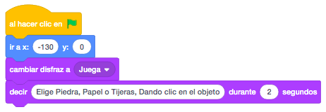
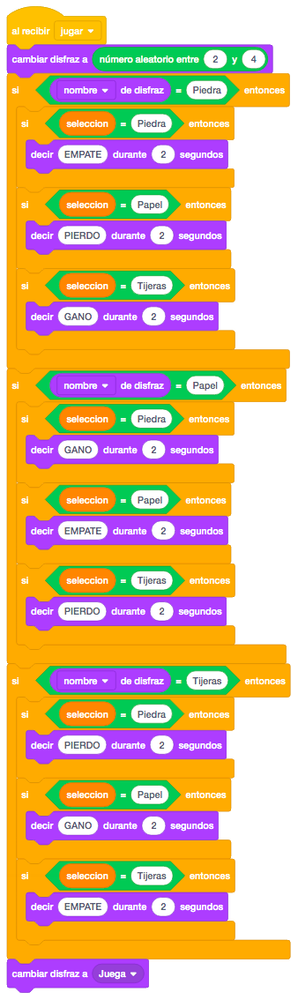
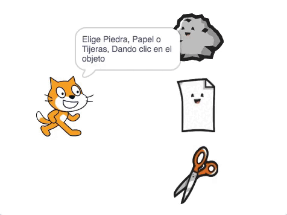

Necesitamos 3 objetos (piedra, papel y tijeras) que serán los que elegiremos en el juego. Pondremos también el gato de Scratch con 4 disfraces, uno normal y los otros tres, uno con cada objeto a seleccionar (piedra, papel y tijeras).
No pondremos ningún escenario.
Para descargar los objetos necesarios para el juego, lo haremos desde este link. Es un archivo comprimido con 4 objetos. Lo descargaremos y lo descomprimimos en el directorio del alumno.
El juego consiste en replicar el clásico juego. Nosotros seleccionaremos uno de los objetos que aparecen a
la derecha de la pantalla y el gato hará su selección aleatoriamente. ¡Suerte!
Primero colocaremos el gato en la parte izquierda de la pantalla, le pondremos el disfraz sin objeto y mostraremos un mensaje con las instrucciones del juego.

Ahora pondremos los tres objetos (piedra, papel y tijeras). Los colocaremos en la pantalla y crearemos una
variable "Selección" para guardar el objeto seleccionado.
Al hacer click en el objeto, programaremos que guarde en la variable "Selección" el valor dependiendo de:
- Si seleccionamos la piedra guardaremos "Piedra".
- Si seleccionamos el papel guardaremos "Papel".
- Si seleccionamos las tijeras guardaremos "Tijeras".
A continuación mandaremos un mensaje "Jugar" para que el gato seleccione su objeto.

El mensaje "Jugar" lo programaremos en el gato. Al recibir este mensaje, lo primero que haremos será cambiar
el disfraz del gato y que seleccionaremos con un número aleatorio entre 2 y 4 (que serán los disfraces con
objeto).
Ahora compararemos el disfraz aleatorio con la variable "Selección" que contiene nuestra selección
La comparación del disfraz se puede hacer por el nombre del disfraz o por el número de disfraz.
Dependiendo de los objetos comparados mostraremos los mensajes:
- Si el disfraz del gato es el mismo, EMPATE
- Si el disfraz del gato pierde, PIERDO
- Si el disfraz del gato gana, GANO
Mostraremos el mensaje durante 2 segundos y finalmente volveremos a dejar el disfraz inicial.

Otro reto que podemos añadir al juego es que al ganar sumemos un punto, al empatar no sumemos nada y al
perder restemos un punto siempre que no nos quedemos en negativo.
¡¡Ojo!! cuando mostramos "GANO" o "PIERDO", lo dice el gato y los puntos son nuestros, no del gato.
Y el juego quedaría así.

Para ver el juego terminado pulsa
aquí.
Para descargarte el juego terminado pulsa
aquí.